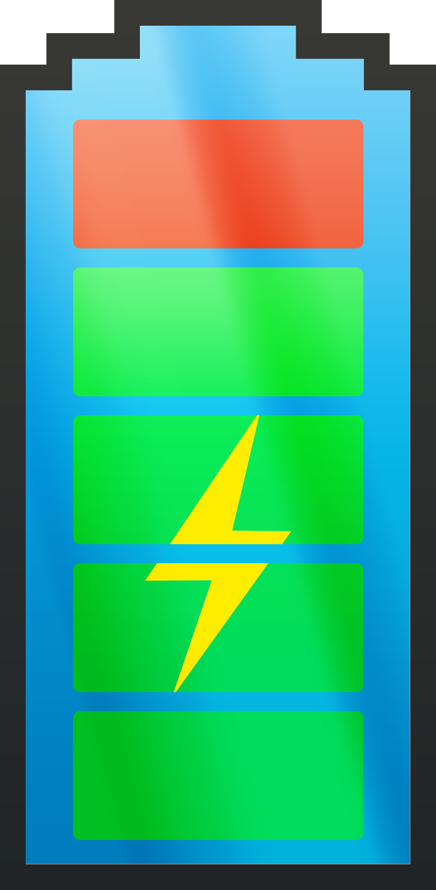

Disc Test:
Het DISC test resultaat had mij in de
S: the steady person groep geplaatst. Als ik eerlijk ben, vind ik zo'n testen 100% belachelijk en
ga ik er dan ook totaal niet mee akkoord. Je probeert mensen weer in te delen in categoriën en groepen die
totaat niet kloppen. Okee, er zijn een paar punten uit de S groep die met mij overeen komen maar er zijn
er ook velen die totaal niet overeen komen en zo gaat dat voor elke groep. Iedereen is een deeltje dit een
deeltje dat, niet 1 van die 4 groepen. Maar hey, misschien ben ik wel fout? We zullen wel zien wat het geeft.
De film: Patser
We zijn dus met school gaan kijken naar de film 'Patser' van
Adil El Arbi in Kinepolis Gent. Normaal gezien verwacht ik zeer weinig van de nederlandse filmindustrie
en dus een nederlandse film. Met die gedachte ging ik dus ook naar de film, niets goeds verwachtend. Ik moet
toegeven, ik was positief verast. Ik had het niet verwacht dat de film zo 'goed' ging zijn. Ik ben het nog
altijd niet eens met bepaalde scenes (waar ze veel te hard in overdreven) en zoals hij had gezegd was het
voor velen ook hun eerste keer acteren (dat was er soms wel aan te zien), maar over het algemeen geef ik
de film een dikke 7/10. Zeker niet slecht maar heb al beter gezien.
Klik hier om de trailer te bekijken:
Patser
Power Distance (PD)
Voor mijn power distance taak hbe ik het hoge PD Rusland vergeleken met het lage PD Zweden met als assumptie
dat in landen waar er een lage PD is, je minder verdient. Hiervoor heb ik in zowel Rusland als Zweden gekeken
naar het beroep CEO. Na wat zoeken had ik gevonden dat in Rusland, een CEO ongeveer 2 340 244 ₽ verdient
als een gemiddele. In Zweden verdient een CEO gemiddeld 1 275 227 kr. Als we beide nu converteren
naar euro, dan komen we voor Rusland een gemiddelde uit van 33 059.16 € en in Zweden een gemiddelde
van 126 720.22 €. Hieruit valt dus te besluiten dat mijn veronderstelling fout was.
InnovIT
Week 1: De Startup
12/3/2018 – 18/3/2018
Wij besloten om met onze groep een crowd-sourced batterij oplaad app/service zouden ontwikkelen met de naam
PowerUp™. Het idee bestond eruit een gemeenschap op te richten waar niemand ooit nog een lege batterij
hoeft te hebben op eender welk elektrisch apparaat. We zouden dan oplaadpunten oprichten waar je gemakkelijk
je apparaat kan opladen. Hiervoor zouden we een app maken die je toelaat te zoeken naar het dichtstbijzijnde
oplaadpunt. Ook zouden we software voorzien dat je je apparaat op een snellere manier dan nu kan opladen
dat je niet te lang hoeft te wachten. Het crowd-sourced zou zo werken dat iedereen die wil, een "stopcontact"
kan voorzien en zijn eigen stroom aanbied. Hiervoor zouden ze een extratje krijgen zodat het geen 0-operatie
is voor de mensen die stroom aanbieden.
Op dit moment kan ik nog niet te veel delen aangezien alles nog in een eerste fase uitgewerkt wordt. Ik
ga zeker nog upadates plaatsen over ons project. Het laatste wat ik je kan meegeven is een sneakpeak van
ons huidige (en zeker nog niet afgewerkte) app logo:

Week 2 & 3: Onze waarde naar de maatschappij toe
19/3/2018 – 1/4/2018
We zijn hard aan het werk geweest deze laatste 2 weken en we hebben enkele updates/verbeteringen. De eerste verandering
waar ik het over wil hebben is dat we een nieuwe naam hebben. Ik was niet echt een grote fan van PowerUp
en dus had ik een poll gestart waaruit de nieuwe naam naar boven kwam.
ChargeBy™.Met een nieuwe naam kwam ook een nieuw logo. Ik heb er de basis voor gelegd door een
ruwe schets te maken. De groep vond het goed en dus werd het verder uitgewerkt. Ik ben tevreden hoe het geëvolueerd
is. Hier is een preview:
Bedrijfsnaam:
Slogan:
Bedrijfslogo:

Nu onze bijdrage aan de maatschappij: wij weten allemaal hoe vervelend het is wanneer de batterij van je
gsm of elektrisch skateboard leeg is. Ze vallen altijd uit op de meest slechte momenten. Nu door ChargeBy
hoef je je nooit meer zorgen te maken dat je een lege batterij hebt. Wij denken dat we veel waarde aan de
maatschappij kunnen bijdragen door ervoor te zorgen dat de batterijen van de mensen volledig opgeladen zijn.
De commercial
2/4/2018 – 2/5/2018
We hebben ons super geamuseerd tijdens het filmen van de commercial en het ineensteken ervan. Ik denk dat het
voor non-professionele editors het er best okee uitziet! Het acteren dat is natuurlijk een ander verhaal!
We hebben geprobeerd een zo wijd mogelijk publiek aan te spreken aangezien onze service wel degelijk voor
iedereen bestemd is.
Je kan onze commercial hier bekijken:
De commercial
Wat ik toegevoegd heb aan het team
Zowels jullie weten heeft de DISC test mij aangeduid als the betrouwbare gast in het team. Ik doe er iedereen
is aan herinneren dat er nog werk moet geleverd worden. Toch gaf de groep mij het gevoel dat ik ook de dominante
persoon moest spelen. Als ik de eerste stap niet zette, werd er zo goed als nooit een stap gezet. Ik kwam
op met het idee voor ons logo, ik hbe de sketch geschreven, ik ben verantwoordelijke geweest voor het filmen,
... Uiteindelijk hebben we wel allemaal gedaan wat we moesten doen dus is alles goed gekomen!